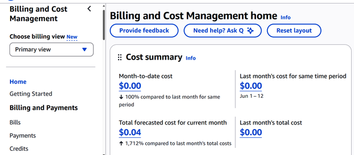

In this chapter, we’ll start by reviewing AWS’s pricing models, including On-Demand, Reserved Instances, Savings Plans, and Spot Instances.
But picking the right pricing model is just the beginning. AWS gives you solid tools to help track and manage your costs. Tools like Cost Explorer, AWS Budgets, and the AWS Pricing Calculator give you visibility into where your money’s going, and help you make smarter decisions about resource usage.
This chapter will also show how cost allocation tags can categorize expenses by team, project, or environment. When you combine these tags with AWS Organizations and the right support plans, you will have a strong foundation for managing cloud spend across different parts of your business.
These topics represent the smallest proportion of the questions on the AWS Certified Cloud Practitioner exam, at 12%. But this certainly does not diminish their importance. In this chapter, we’ll look at what you need to know.
AWS pricing works much like your electricity bill. That is, you pay for what you use. Instead of shelling out sums up front for servers and infrastructure, you’re only charged based on your consumption.
Pricing for services falls into three main categories: compute, storage, and outbound data transfers. You generally won’t pay anything for data coming into AWS or moving between services in the same region.
Each AWS service has its own pricing factors. For EC2, costs depend on factors like how many hours you run instances, the types of instances you choose, whether you enable detailed monitoring, and any cross-region data transfers. For S3, pricing varies based on storage class, number of requests, and how often you retrieve data. EBS pricing takes into account your volume type, performance requirements, and snapshots for backups. RDS costs reflect database runtime, storage size, setup complexity, and your deployment architecture.
For many organizations, compute resources make up the biggest slice of their AWS bill. That’s why Amazon has rolled out so many pricing models over the years: to give you as many tools as possible to optimize and control these costs without sacrificing performance.
Let’s take a look at these pricing models.
When you launch a VM in Amazon EC2, you’ll usually end up using On-Demand pricing by default. This option is straightforward and flexible. With On-Demand, you only pay for the compute time you use.
The billing is precise. It’s calculated per second with a 60-second minimum for Linux instances. So whether your instance runs for a couple of minutes or several hours, you pay only for that exact usage.
The On-Demand instance pricing model is a good choice for when you have workloads with sudden spikes in demand or for applications where resource needs fluctuate unpredictably. On-Demand pricing is also useful for testing, experimenting, or running proof-of-concept projects. You can spin up an instance in minutes, test your ideas, and shut it down without worrying about ongoing commitments.
Reserved Instances provide up to 72% savings for three-year All Upfront commitments on specific instance types in a Region, though savings vary by term, payment option, and instance family. Although AWS often recommends Savings Plans for more flexibility, Reserved Instances pricing remains popular. The savings come from your commitment, which helps AWS plan its capacity better. You get to choose how you pay:
All Upfront
Partial Upfront (you pay a smaller initial payment and then reduced hourly rates)
No Upfront (skips the initial payment but still offers discounted hourly charges compared to On-Demand pricing)
Reserved Instances work best when you have predictable, steady workloads and you know you’ll need those resources for a long time. They’re good for if you’re running mature applications with consistent usage, and you want both lower costs and predictable budgeting.
The Savings Plan pricing option is similar to Reserved Instances pricing. Both save up to 72% compared to On-Demand pricing, so long as there is a commitment of between one and three years. So what are the differences? First, the Savings Plan pricing option tends to be easier to manage across a wider range of services.
For example, if you have a Compute Savings Plan, you’ll get the same discount whether you switch from C4 to C6g instances, move workloads between EU (Ireland) and EU (London), or migrate from EC2 to services like Fargate or Lambda.
AWS currently offers three types of Savings Plans:
The most flexible option, covering EC2, Fargate, and Lambda usage regardless of instance family or region.
Offers deeper discounts but requires you to stick with specific instance families within a region.
Designed specifically for ML workloads, giving you cost savings on SageMaker usage.
Savings Plans make the most sense for organizations with steady, predictable workloads that still want the freedom to adjust architectures or adopt new AWS services over time.
Spot Instance pricing provides unused EC2 capacity at discounts of up to 90% compared to the On-Demand model. But the pricing is dynamic. The cost goes up or down based on long-term trends in supply and demand for unused capacity. Moreover, if AWS needs that capacity back for On-Demand customers, it can reclaim your Spot Instances with little notice.
Spot Instances work best for workloads that are fault-tolerant and can handle being interrupted. Think of stateless applications that don’t rely on persistent in-memory data. They’re also a good fit for batch processing, data analysis jobs, and ML model training.
When using Spot Instances, you should build your applications to handle sudden termination smoothly.
Dedicated Host pricing is where you get an entire physical server. This setup gives you full control over the system.
While Dedicated Host pricing usually comes with higher upfront costs than shared infrastructure, it can save you money in the right situations. For instance, if you already own licenses for software like Windows Server, SQL Server, or SUSE Linux Enterprise Server, you can bring those licenses to your dedicated hosts.
AWS offers dedicated hosts through both On-Demand pricing and Savings Plans. This gives you flexibility in how you manage costs. You can pay as you go if you need short-term dedicated infrastructure or commit to longer terms for lower rates if you have predictable, ongoing needs.
Both Dedicated Instances and Dedicated Hosts provide your own physical servers. However, they work differently.
Dedicated Instances don’t give you full control of the system. AWS manages the underlying servers for you.
A disadvantage of the Dedicated Instance pricing model is that you cannot get the savings from server-bound licenses. The reason is that AWS cannot guarantee that your instances will stay on the same physical server.
Another drawback is with compliance. Since there is uncertainty about the location of the physical servers, this could mean violating sovereign residency requirements.
Then why use the Dedicated Instance pricing model? A major advantage is the simplicity. AWS only charges you for the instances you launch, not for the entire physical server.
On-Demand Capacity Reservation pricing gives you a way to lock in EC2 capacity within a specific Availability Zone. It guarantees that the compute resources you need will be there when you need them, even during peak demand, without requiring a long-term commitment.
When you create a capacity reservation, you’re securing compute resources in advance. This means your instances can launch without delay, even if other users are competing for the same capacity in that AZ. For organizations that can’t afford downtime, this assurance is critical.
These reservations are suitable for business-critical and time-sensitive workloads where availability isn’t negotiable. For example, if you’re about to launch a major ecommerce promotion, run financial end-of-day processing, or host a live-streamed event, you don’t want to risk your instances failing to launch because capacity isn’t available.
They’re also useful for compliance. Organizations with strict uptime and failover requirements can use reservations to meet their high availability standards reliably.
Another important use case is disaster recovery. During regional outages or emergencies, many businesses scramble to spin up additional resources, which can lead to shortages. By reserving capacity in advance, you make sure your backup systems work as planned, keeping your operations running smoothly even when demand surges. On-Demand Capacity Reservations secure EC2 capacity in a specific Availability Zone but charge for reserved capacity whether used or not. But you can use Reserved Instances or Savings Plans for discounts on usage.
Table 15-1 summarizes the different AWS pricing models.
| Models | Description and key points |
|---|---|
|
On-Demand Instance pricing |
|
|
Reserved Instance pricing |
|
|
Savings Plan pricing |
|
|
Spot Instance pricing |
|
|
Dedicated Host pricing |
|
|
Dedicated Instance pricing |
|
|
On-Demand Capacity Reservation pricing |
The AWS Billing Console is a financial dashboard for your AWS account. It gives you a clear view of both current and historical usage and costs. This makes it easier to spot trends, catch unexpected charges early, and plan ahead.
Figure 15-1 shows the dashboard. You can find this by first going to the AWS Management Console and searching for Billing and Cost Management.

A key advantage of this dashboard is centralized billing. If you manage multiple AWS accounts—say, for different teams or departments—you can pull all the costs into one place. This makes internal accounting simpler and helps keep everyone on the same page.
For this, you can use AWS Organizations. They allow for grouping accounts into different units. This makes it easier to apply policies, allowing for stronger governance and improved security.
The service also simplifies billing. Instead of managing invoices for every account, you get one consolidated bill. This makes it easier to track overall spending, divide costs by team or project, and take advantage of AWS volume discounts.
Regardless of whether you use AWS Organizations, the dashboard provides various options for cost analysis, which you can find on the left sidebar. We’ll take a look at some of the main ones.
AWS Cost Explorer gives you a clear, visual way to track your cloud spending over time.
Once you turn it on through the AWS Billing and Cost Management Dashboard, it automatically pulls in up to 13 months of historical data and can project up to a year into the future. The data refreshes daily.
To turn on this service, you click Cost Explorer and select Enable Cost Explorer. AWS may take a few minutes to prepare your historical cost and usage data.
With the Cost Explorer, you can break down your costs by month or day, and if you need more detail, there’s an option to view hourly usage for the past two weeks.
The Cost Explorer comes with a set of helpful reports, such as those showing monthly spend by service, or daily EC2 usage. But you can also create customized reports, using up to 18 filters, such as for tags, services, regions, resource types, and accounts.
The Cost Explorer uses ML to forecast your future spending for up to 12 months.
If you’re using Reserved Instances (RIs) or Savings Plans, Cost Explorer helps you keep track of utilization and coverage. It flags upcoming expirations and suggests new commitments based on your actual usage.
The AWS Pricing Calculator helps you plan costs before you spin up any infrastructure, such as for configuring services like EC2, S3, RDS, and Lambda. For larger projects, you can group services into logical units, so it’s easier to manage complex estimates. Each estimate shows a clear breakdown of upfront and ongoing costs.
Once you’re done, you can save your estimate as a shareable link, or export it to PDF or CSV. If you sign in with your AWS account, the calculator can factor in your existing usage patterns, discounts, and purchase commitments to produce more realistic, personalized estimates.
However, the AWS Pricing Calculator is a planning tool, not a quote. Real-world costs can vary depending on your usage, pricing region, discounts, taxes, and more.
AWS Budgets provides tools to set spending limits, track usage, and get alerts before things spiral out of control. The budgets can run on a schedule that fits your needs: daily, monthly, quarterly, or annually. And you can slice them by service, tag, account, or region.
What really sets AWS Budgets apart is its ability to act—not just alert you—when thresholds are hit. You can tie a budget to an automated response, like denying new resource provisioning by applying IAM.
AWS cost allocation tags help you make sense of your cloud bill by adding context to your resources. They are labels in the form of key-value pairs, which you attach to services like EC2 instances, S3 buckets, or RDS databases. Cost allocation tags are included with tools like the Cost Explorer and Budgets. AWS supports both built-in system tags (like aws:createdBy) and fully custom, user-defined tags.
It’s worth noting that tags only start affecting cost reports after you activate them. They don’t apply retroactively, and not every AWS service supports tagging. You’ll want to think about tag enforcement early, especially if you’re planning to use them for cost allocation.
AWS has a wide range of technical resources and support options. Let’s start with the basics. AWS Documentation (at docs.aws.amazon.com) is packed with useful information. You’ll find everything from EC2 Linux and Windows user guides to detailed API references, CLI instructions, and tutorials covering services like Auto Scaling, Lambda, and Nitro Enclaves. It’s comprehensive, well-organized, and kept up to date.
Alongside the documentation, AWS offers FAQs, whitepapers, and architecture guides that provide best practices for security, compliance, and cloud design patterns. The AWS Blog is also a great place to stay current. It features service announcements, technical walkthroughs, and real-world case studies.
When you’re looking for more than documentation, AWS has specialized resources to help solve real-world challenges. AWS Prescriptive Guidance offers curated strategies and reference implementations from AWS experts and partners. This is helpful for cloud adoption, migration, and modernization.
For quick troubleshooting, there’s the AWS Knowledge Center, and if you prefer a community-driven approach, AWS re:Post has a Q&A platform.
AWS support is based on tiers:
Covers billing issues, access to community forums, and basic health data.
Adds business-hours access to Cloud Support Associates. This is a good option for early-stage or test environments.
Designed for production use. It includes 24/7 access to senior engineers, the full Trusted Advisor toolkit, third-party software support, and optional event support through Infrastructure Event Management (IEM).
Built for critical workloads. It includes a pool of Technical Account Managers (TAMs), prioritized case handling (e.g., 30-minute SLA for critical issues), architectural reviews, and AWS Countdown planning for major events.
The top tier. You get a dedicated TAM, a Concierge billing team, faster SLAs (as low as 15 minutes), ongoing proactive reviews, and advanced automation tools to keep everything running smoothly at scale.
There is also the AWS Partner Network (APN), which includes independent software vendors (ISVs), system integrators, and consultants. Through the AWS Marketplace, customers can discover vetted tools for cost tracking, governance, security, and more.
And when your team needs direct, hands-on help, AWS Professional Services and Solutions Architects are available to collaborate on architecture design, deployment, and optimization.
In this chapter, we looked at the key concepts and tools related to AWS billing, budgeting, and cost management. From understanding the various pricing models to leveraging tools such as AWS Cost Explorer, Budgets, and the Pricing Calculator, we’ve seen how AWS provides a helpful framework for tracking and optimizing costs. We also covered resource tagging, centralized billing with AWS Organizations, and available support options to help ensure both financial control and operational efficiency.
We have now reached the point of this book where we have covered all the main topics you may see on the exam. In the next chapter, we’ll look at tips and strategies for how to study for it.
To check your answers, please refer to the “Chapter 15 Answer Key”
What is a key benefit of AWS On-Demand Instance pricing?
You pay only for compute time used without long-term commitments.
You receive up to a 72% discount with a three-year commitment.
It automatically scales based on traffic.
It requires upfront payment for cost optimization.
Which AWS service provides a visual breakdown of costs over time?
AWS Pricing Calculator
AWS Budgets
AWS Cost and Usage Report
AWS Cost Explorer
What is the key feature of On-Demand Capacity Reservation pricing?
It requires a one-year commitment.
It automatically migrates instances.
It guarantees capacity in a specific Availability Zone.
It offers the cheapest Elastic Compute Cloud (EC2) rates.
What is the purpose of cost allocation tags?
To encrypt resources
To track AWS resource costs based on project or department
To predict usage trends
To enable data replication
What is the role of AWS Organizations in billing?
It hosts your EC2 instances.
It consolidates billing across multiple accounts.
It encrypts billing data.
It migrates workloads between accounts.